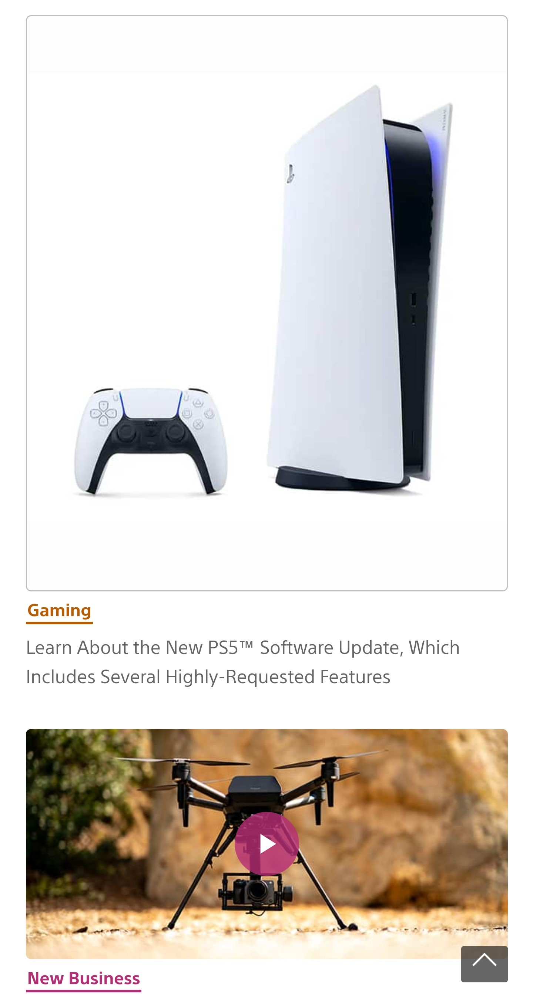

Visual Hierarchy
SONY
sony.com

The Sony website follows the visual hierarchy design principle very
well. The elements are organized from top to bottom in a clean, linear
fashion.
PARC: Proximity
Funimation
funimation.com

Funimation does a great job of keeping related elements together and
seperating them into chunks that are visually appealing to the user.
White Space and Clean Design
Wizards of the Coast
company.wizards.com
.jpeg?v=1645907152991)
Wizards of the Coast uses white space in a way
where it makes their website look cleaner and well condensed where it is used.